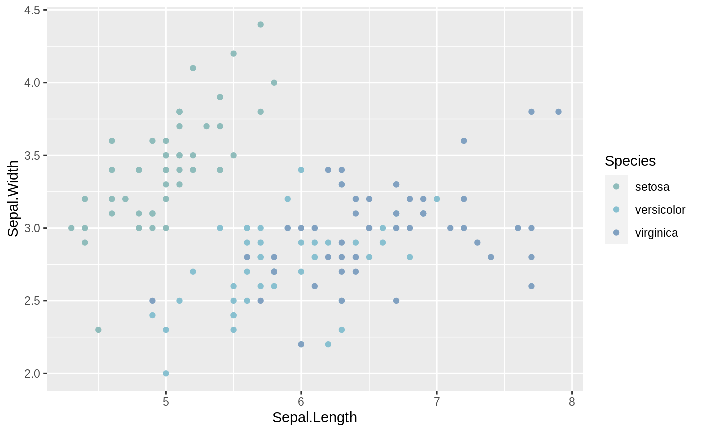

These functions provide the option to use the discrete and dynamic palettes
along with the ggplot2 package. It goes without saying that it requires
ggplot2 to work.
scale_colour_paletteer_d(palette, direction = 1, dynamic = FALSE, ...) scale_color_paletteer_d(palette, direction = 1, dynamic = FALSE, ...) scale_fill_paletteer_d(palette, direction = 1, dynamic = FALSE, ...)
| palette | Name of palette as a string. Must be on the form packagename::palettename. |
|---|---|
| direction | Either |
| dynamic | toggles between the discrete palettes and the dynamic palettes. Defaults to FALSE which indicates discrete palettes. |
| ... | additional arguments to pass to discrete_scale |
Available package/palette combinations are available in the data.frame
palettes_d_names and
palettes_dynamic_names.
if (require('ggplot2')) { ggplot(iris, aes(x = Sepal.Length, y = Sepal.Width, colour = Species)) + geom_point() + scale_colour_paletteer_d("nord::frost") }